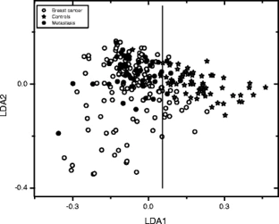
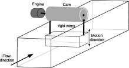
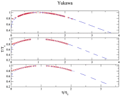
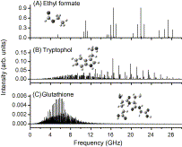

Vapor-liquid equilibrium and critical behavior of the square-well fluid of variable range: A theoretical study By Ana Laura Benavides on 2005
Modelling adsorption using an augmented two-dimensional statistical associating fluid theory By Alejandro Gil-Villegas on 2019
 Raman spectroscopy and multivariate analysis of serum samples from breast cancer patients By Gerardo Gutierrez on Feb 13, 2007
Dynamical Arrest Transition in Nanoparticle Dispersions with Short-Range Interactions By Ramón Castañeda on March 11, 2011
 Energy–efficient mixing generated by prescribed crosswise oscillations of a square prism in highly confined flows By Francisco Sastre on Apr 6, 2020
 R -crossing method applied to fluids interacting through variable range potentials By José Torres on Dec 1, 2019
 Rotationally resolved electronic spectroscopy of 3-cyanoindole and the 3-cyanoindole–water complex By Leonardo Álvarez-Valtierra on Jan 1, 2018
Low-threshold parametric oscillation in organically modified microcavities By Rigoberto Castro on Jan 1, 2018
Retrieval of Absorption or Scattering Coefficient Spectrum (RASCS) Program: A Tool to Monitor Optical Properties in Real Time By Erick Sarmiento on Sep 30, 2019
Fabricación de nanoestructuras por ablación láser y su uso en SERS con bajo umbral de detección: el caso de Ag-Nps By Alejandro Martínez-Bórquez on 2020
Implementation and assessment of a low-cost 3D laser platform controlled by open software for printing polymeric micro-structures By Gerardo Gutiérrez-Juárez on 2020